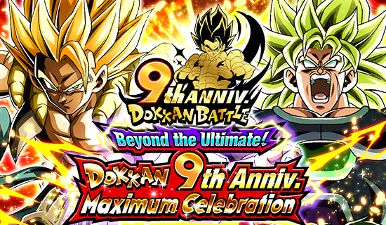 WE ARE DOKKAN!!!!
Só pra constar, esse é o melhor aniversário da história, sim, é só que a completa falta de informação da junção das versões deixa tudo muito engraçado
Enfim, a melhor celebração de todas facilmente, o aniversário mais hype, mais impressionante e com muita novidade boa pro jogo, só coisa boa ein
^ Sumário (clique para ir a qualquer um dos tópicos)
Vai ter rap no aniversário também? Perfeito.
Bom, isso não é bem um rap, na verdade é tipo uma "releitura" (?) de uma dança do Japão chamada Sōran Bushi
Eu achei a ideia interessante, até pq na canção original eles mencionam uma palavra que soa muito como "Dokkan", então combinou perfeitamente
Simplemente o inicio mais brabo possível pra uma celebração.
GOGETA BLUE
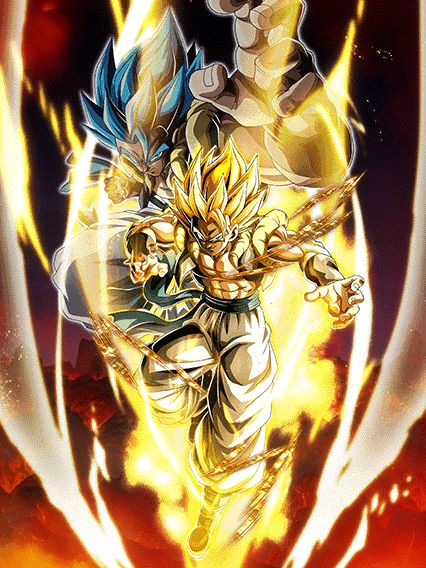
O cara é praticamente intocável e ainda sim stacka DEF, goat.
O Gogeta é um card "faz-tudo", ele tem todas as mecânicas de hidden potential e ainda é um orb changer lendário, que personagem incrível
Pra começar, o Gogeta é um líder de 200% pra Movie Heroes, então o cara é brabo mesmo
E por sinal, o Gogeta tem defesa ativa por 3 turnos pra ajudar ele no começo da luta, o que já é ótimo
Ele stacka 30% de DEF no Ultra Super Attack, mas como eu disse, ele tem muito desvio transformado, fica meio desnecessário o stack
E esse cara também é efetivo contra tudo permanentemente, o que ajuda muito o dano dele
Bom, o Gogeta muda aleatoriamente orbs que não sejam PHY pra rainbow, o que é maravilhoso já que ele não sofre por Ki, então o time inteiro se beneficia disso
Ele lança um adicional com 70% de ser um Super Attack, e precisando pegar só um único rainbow orb, ele lança um Super Attack adicional garantido também
Com esses adicionais e o hidden potential, o Gogeta pode dar 4 supers num turno e cada super aumenta o ATK e DEF em 50% no turno, então ele com certeza não vai tomar muito dano nesse começo de luta
Bom, de início, é só isso, o Gogeta é bem simples, ele vai ficar tranquilo até o turno onde ele se transforma
E falando em transformação.. essa deu medo
O Gogeta se transforma a partir do turno 4, mas não do turno 4 da luta e sim o quarto turno dele (é similar a condição do Vegetto Blue AGL, mas sem a condição de HP podre junto)
Não é uma condição ruim não, já que é só dar float nele no turno q ele aparecer e quando ele voltar, pronto, ele já pode transformar
Como a defesa ativa dele acaba depois de 3 turnos, é bem arriscado ficar stackando mais, até pq não faz tanta diferença, então só transforme assim que puder
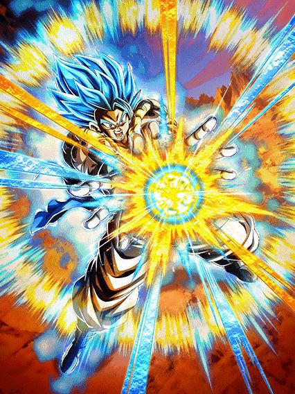
O segundo Mr. Dokkan Original, mas melhor, e em pessoa.
O Gogeta mantém algumas coisas que ele já tinha, como o orb change e ser efetivo contra tudo, só que ser efetivo vai ser inútil daqui um momentinho..
Agora o Gogeta lança 1 super adicional garantido e lança outro pegando 1 rainbow orb, bem balanceado isso aí
Mas as grandes mecânicas do Gogeta é que por 4 turnos ele cura 54% de HP (pq sim, nem tem motivo pra isso), e ter 70% de chance de desvio, que obviamente faz dele um personagem quebrado considerando o tanto de coisa que ele já faz
E agora o dano do Gogeta fica absurdo, já que cada desvio que ele fizer dá 20% de chance de crítico, e essa chance não tem limite, então o Gogeta dá crítico garantido infinito depois de desviar 5 vezes
Ah, por sinal, esse cara tem um Ultra Super Attack com animação original e que aumenta 100% de ATK por 4 turnos, então o dano já é alto no primeiro turno dele, e no turno seguinte, fica ainda mais absurdo
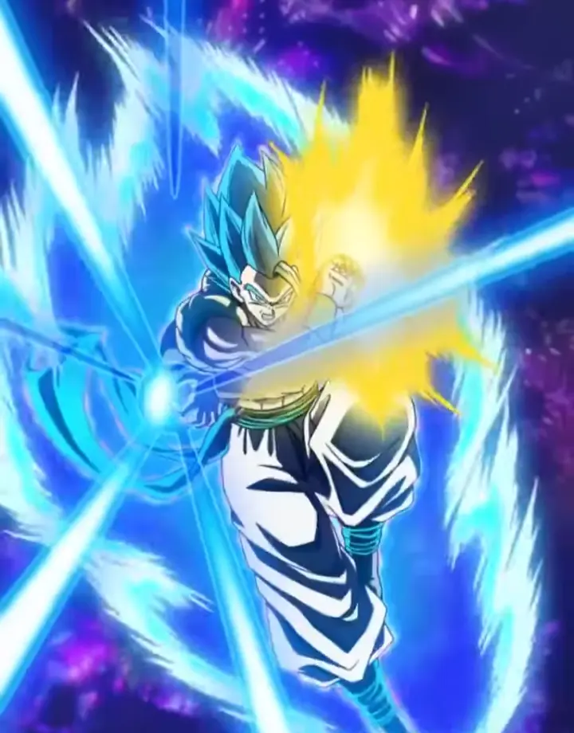
E se tudo isso não parece suficiente, tem mais.
O Gogeta tem a nova mecânica de atração de ataques na Active Skill dele, e mlk, que Active desbalanceada
O Gogeta dá um dano do caramba no inimigo (provavelmente vai ser crítico), atraí TODOS os ataques no turno pra ele e desvia garantido, personagem desbalanceado demais cara
Essa Active skill basicamente impede o boss de fazer qualquer coisa, mas tem alguns limites
- Ataques em área ignoram essa atração, eles ainda vão pegar no time inteiro
- O Gogeta é um personagem de desvio, se o boss nulificar desvio, o Gogeta vai atrar todos os ataques pra si e morrer né, toma cuidado
Obviamente essas limitações não impedem o Gogeta de ser um top tier facilmente, e ele realmente é um card genial
OSTs incríveis, Kit muito forte e fácil de entender, protege o time, e animações lindas
E quer saber de uma coisa? Esse cara tem 70% de chance de counterar supers de Ki e..
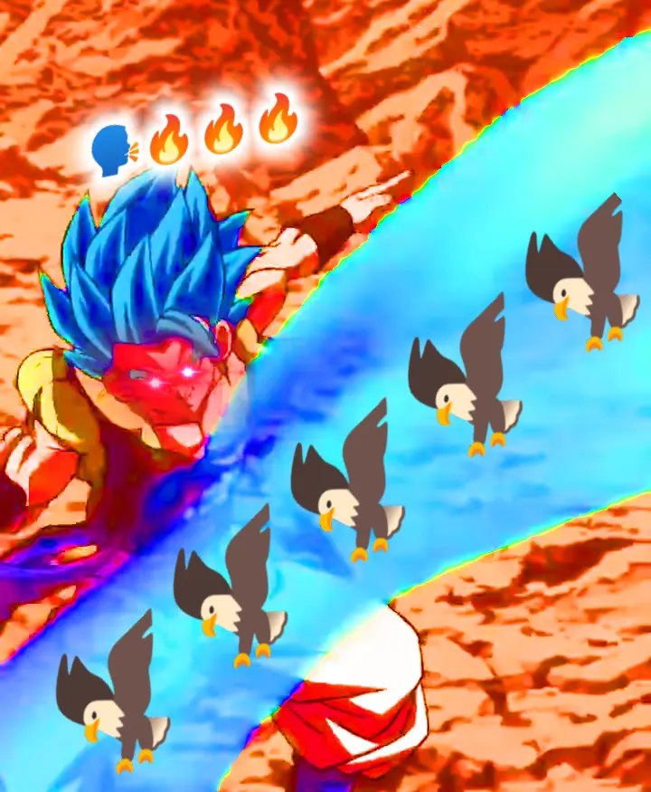
RAAAAAAHHHH MUDADA!! 🦅🦅🦅🦅🦅🦅🦅🦅
BROLY FULL POWER
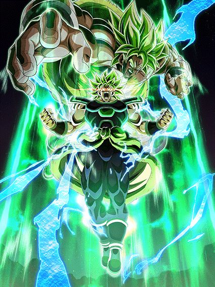
O N.1 por 2 semanas, mas ainda assim, o N.1.
O Broly é simplesmente uma máquina de dano e defesa, o cara tem vários adicionais e stacka ainda.. só vai se ligando..
Pra começar, ele tem defesa ativa permanente, então ele já tem a capacidade de tankar bem
Ele também é lider pra Super Bosses, mil vezes melhor que o Goku Black Rosé PH-
Falando dos Super Attacks dele, ele stacka 50% de ATK pra sempre e ganha 30% de DEF por 4 turnos no Ultra Super Attack, e no Super Attack normal, stacka 30% de ATK e ganha 30% de DEF no turno, o que faz dele um card bem similar aos GT Boys do ano passado, já que eles focavam bastante no ATK
Bom, o Broly tem a animação de intro mais pesada do jogo inteiro (demora um 5 segundos pra carregar o negócioKKKKK) e por 4 turnos lança um Super Attack adicional garantido
Não só isso, mas caso ele estiver no slot 1 ou 2, ele lança outro Super Attack adicional, e caso ele esteja no slot 3, ele lança um Super Attack adicional e outro adicional com 50% de chance de ser um Super Attack
Então é, o foco dele é dar o máximo de supers possível e stackar muito
Algo que eu prefiro muito mais nesse cara é que ele é muito mais confiável que os GT Boys por exemplo, já que ele tem muito mais coisas garantidas sem nenhuma condição de Ki, o que é ótimo
E a forma base dele é basicamente só isso, ele dá muito dano e, graças a defesa ativa, consegue tankar bem de boa
Agora vem a transformação dele.. hmm..
Bom, o Broly tem a condição de transformação meio podre infelizmente, já que ele pode se transformar a partir do turno 5, mas é o quinto turno dele e não o quinto turno da batalha, e diferente do Gogeta, não dá pra só dar float nele e no turno seguinte já transformar
Infelizmente leva um tempinho pro monstro sair, até pq algumas vezes as lutas acabam antes do Broly ter a chance de se transformar
Mas caso ele consiga..
Pode fazer uma pausa, tomar um café, fazer uma caminhada, dar uma volta na cidade toda, e esse cara ainda vai estar mandando adicionais..
Antes de falar qualquer coisa sobre o kit desbalanceado desse cara, tenho que mencionar que, ao se transformar o Broly cria um domínio muito forte por 4 turnos, dando 4 de Ki e 10% de ATK e DEF pra aliados e inimigos Extreme Class, e mais 10% caso eles sejam Movie Bosses ou Exploding Rage
Pra completar, enquanto o domínio estiver ativo, o Broly ganha 26% de redução de dano antes de atacar, e aliados e inimigos Super Class recebem 10% de dano a mais
Então é, o cara buffa muito o time, é provavelmente o domínio mais forte do jogo (no Global né), com uma das melhores OSTs do jogo inteiro
A OST do cara começa como a de um vilão, mas muda de tema logo depois já que o Broly não é do mal
E o som do Ki carregando de fundo é genial, simplesmente peak.
Falando sobre o próprio Broly, ele vira uma verdadeira máquina de dano e acabou
O cara vai meter um Ultra Super Attack de 25 milhões, e logo depois vai mandar um Super adicional garantido, e caso cê esteja com 24 de Ki, ele lança outro Super adicional, e ele vai lançar mais outro Super adicional de graça, será que é suficiente?
Só pra constar, no Ultra Super Attack ele ganha 26% de chance de crítico, e no Super Attack normal ele ganha mais 26%, então o cara vai dar um dano absurdo, critando, e tendo uma defesa muito braba
O Broly tem a mecânica de ganhar 50% de DEF multiplicativa quando ele for receber um ataque, então a defesa dele antes de atacar é ok, e depois de atacar 300 vezes, ele vira uma parede, já que ele continua com defesa ativa
É basicamente isso, o Broly é decente na forma base, mas transformado ele se torna um monstro, o cara é o mais puro dano e destruição
Quer um fato curioso? Esse cara compartilha 5/7 links com o Goku SSJ4 INT LR, use essa informação como preferir.
GOLDEN FREEZA INT
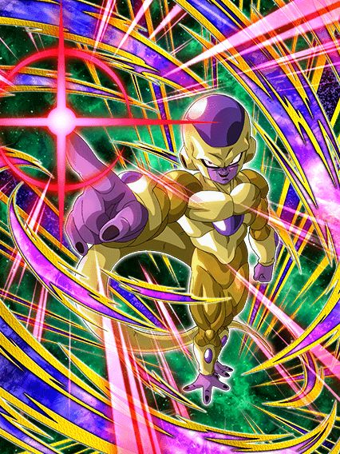
UM PERSONAGEM SECUNDÁRIO DE ANIVERSÁRIO BOM?????? COMO ASSIM?????????
O Freeza é um tank e suporte pra Super Bosses, e que suporte incrível mlk
Pra começar, levando ou desviando de 1 golpe o cara dá crítico garantido já, e isso é o começo
No turno 1 o Freeza simplesmente tem 60% de redução de dano, e nos turnos seguintes, ela vai ficando um pouco restrita..
No turno seguinte, a redução cai pra 50% e só fica disponível se ele pegar 3 orbs, o que é aceitável
Após isso, a redução cai pra 40% com 3 orbs pegos, e não diminui depois disso, então pelo menos ele não vira farofa depois de um tempo igual ao Golden Freeza LR
E caso todos aliados no turno sejam Super Bosses, ele ganha 20% de redução de dano em cima de tudo já mencionado, então ele realmente é uma parede
Normalmente só redução de dano pura não é tão boa, mas esse cara pelo menos consegue manter a redução dele alta, e por ser um vilão e ter o papel de ser um floater, esse cara não vai estar tanto nos turnos, então você não vai acabar ficando maluco por causa dos orbs dele e etc
Enfim, ele dá 60% de ATK e 30% de DEF pra Super Bosses, então o cara realmente é a ajuda perfeita pro time do Broly
Quem diria né? Ainda me surpreende que até os personagens secundários do aniversário tiveram atenção dessa vez
O EZA do Gogeta do Nono Aniversário
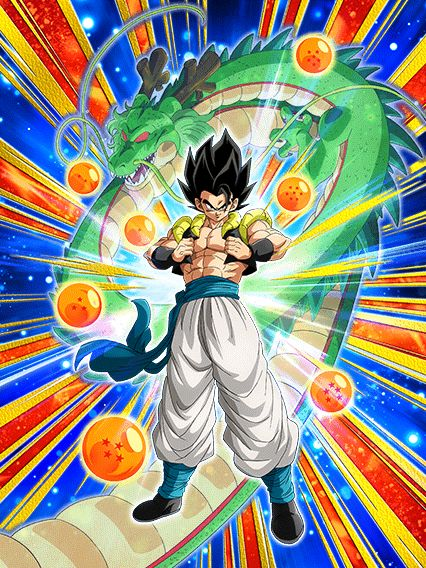
Tá ai uma anomalia braba: Um card sem SSR mas com EZA.
Esse Gogeta é só um card colecionável, então ele não é necessariamente forte
Ele é um nuker básico, ganhando 19% de ATK e DEF por orb pega, e caso tenha um aliado Movie Heroes ou Super Heroes, aumenta pra 28%
Ele fica super efetivo caso você pegue 5 orbs, e dá crítico garantido se você de algum jeito pegar 9 orbs, que eu acho bem difícil, já que esse cara não tem orb change
Acho q o mais interessante desse card (além da arte linda), e o fato de ele "stackar desvio" no Super Attack
Cada Super Attack que ele fizer aumenta a chance de desvio dele por 19% no turno, que é uma mecânica super básica e bem nada demais por enquanto, mas que pode ser muito forte se for colocada em cards futuros
Em geral, cardzinho bonito
Por sinal, eu acho genial o Shenlong no fundo formar o número 9 ao invés de eles usarem as esferas do dragão como sempre fazem.
EZA do Broly, Cheelai e Lemo LR
Estão atrasados.
Por algum motivo o Global atrasou muito o EZA desses caras e resolveu colocar de última hora, vai entender
Bom, eles tem um monte de buffs engraçados e fortes mas o objetivo com eles segue o mesmo que eles tinham antes do EZA: Pegar 7 orbs pra ter desvio garantido.
Na minha mais honesta opinião, eu não gosto desses caras, mas eles são uma opção bem importante pra Super Bosses então.. fazer o que né
Além de obviamente a passiva de nuke deles ter sido aumentada de 15% pra 30% de ATK e DEF por orb pega, eles também ganharam um buff na mecânica de orbs deles
Além de eles agora darem 2 de Ki pra todos aliados independente de que orbs você pegar na luta (TEQ ou INT = 39% de DEF, STR ou AGL = 39% de ATK), eles dão mais 15% de ATK e DEF caso você pegue 1 rainbow orb, o que faz deles um suporte muito forte
E tem mais: Eles tem o raro suporte de redução de dano
Se eu não me engano, eles são o primeiro card desde o Gokuzinho PHY de 2023 que dá redução de dano pros aliados, e é algo bem fácil, já que tendo 24 de Ki, eles lançam um Super Attack adicional e dão 10% de redução de dano pra Super Bosses e Movie Bosses
E aí começam os problemas desses caras.. vamo lá
Eles mudam orbs aleatoriamente pra PHY quando estão abaixo de uh.. 60% de HP.. é bastante coisa né? Bem inconsistente
E tem uma mecânica engraçada: Eles mudam TODOS os orbs pra PHY se seu HP estiver abaixo de 39%
Obviamente isso só ativa 1 vez por partida, mas ainda sim, é engraçado ver o dano potencial máximo deles
Mas então uh.. você deve ter notado que apesar de tudo q eu mencionei acima, tá faltando uma coisa, que é os "7 orbs pra ter desvio garantido"
Então.. se você não estiver nessas condições de HP bem absurdas, esses caras não tem orb change nenhum e isso resulta em não conseguir os 7 orbs várias vezes
Graças ao EZA, esses caras agora tem 50% de chance de desvio incondicional, o que é muito bom, mas não é confiável né
Essa é a grande falha desse card, eles não terem nenhuma forma de orb change sendo que Super Bosses tá lotado de personagens que precisam de orbs
Como a lenda DaTruthDT mencionou recentemente, usar esse card é como jogar um "cara ou coroa"
Ou você consegue os 7 orbs toda vez e esses caras dominam a partida, ou eles vão ser a causa de você perder 90% das vezes.
EZA do Broly e Paragus
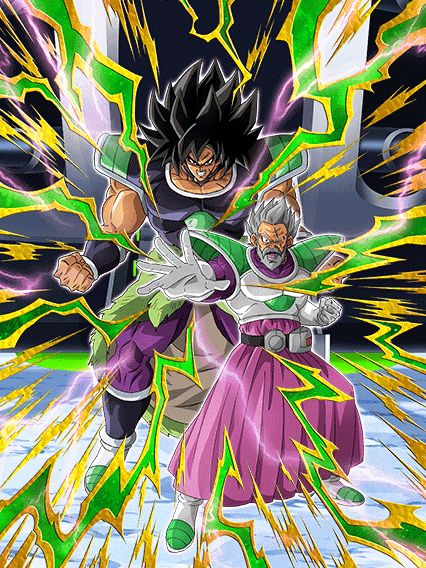
Eles tem 2 categorias.
Sabe, é triste, mas também é muito engraçado, esses caras tão em Pure Saiyans e Joined Forces, cabou
Esses caras são extremamente similares a Mai STR da celebração de downloads do ano passado, já que o objetivo deles é dar pelo menos 2 supers
Cada Super Attack deles dá 26% de redução de dano no turno, então pelo menos 2 já são 52%, o que é decente
Junta isso com o fato de eles terem 50% de chance de dar um Super adicional incondicional e outros 50% caso tenha um inimigo Pure Saiyans, e você tem de resultado 78% de redução de dano (caso você dê o super do Hidden Potential, esses caras tem mais de 100% de redução de dano, então eles essencialmente ficam invencíveis)
Mas claro, isso só se as estrelas do universo inteiro se alinharem, pq em geral esses caras só vão ter um adicional mesmo
Eles também stackam 30% de DEF no super, que ajuda eles a tankarem até bem com esses adicionais
Então, é, eles são um ótimo suporte pra personagens como o novo Broly LR por exemplo, mas o simples fato de eles não terem times faz com que eles sejam inúteis
Simplesmente não tem onde usar eles
EZA do Bardock e Gine
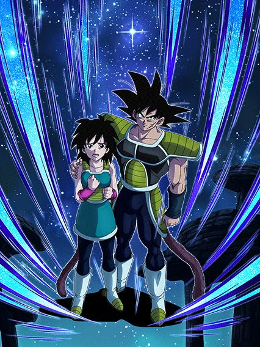
Suporte.
O EZA não mudou muito eles não, eles seguem sendo um suporte, mas agora eles conseguem tankar relativamente melhor
Além de as porcentagens q eles já tinham na passiva terem sido aumentadas, o buff mais relevante que eles receberam foi de ter +122% de ATK e DEF tendo outro Bond of Parent and Child no turno, que é algo bem fácil né
Tirando isso, outro buff relevante foi no Super Attack deles, já que agora ele aumenta o ATK e DEF em 100% no turno e ainda dá 22% de ATK e DEF pra todos aliados por 2 turnos, e suporte de múltiplos turnos é sempre bom, não dá pra negar
Infelizmente eles ficam só nisso mesmo, sem defesa ativa, redução de dano ou desvio
Eles realmente tem o único propósito de ajudarem o time e talvez sobreviver a alguns ataques básicos.
World Tournament n.51
WORLD TOURNAMENT NO ANIVERSÁRIO??
HAHAHAHAHA QUE LEGAL EU AMO O WORLD TOURNAMENT
EZA do Tenshinhan INT
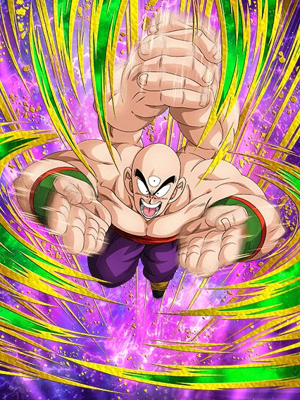
Imagine o Goku Black Rosé PHY, mas ele não é o Goku Black, e também não é PHY.
Esse Tenshinhan se baseia só em adicionais, e é essa a passiva dele
Ele lança 2 adicionais que tem 70% de chance de serem Super Attacks, lança um Super adicional toda vez que atacar 4 vezes, e lança outro Super adicional se tiver um inimigo Turtle School
Cada Super Attack dá 50% de ATK e DEF por 9 turnos, então dependendo de quantos supers você der por turno, esse cara até pode chegar em um dano e defesa decentes
E só pra constar, o único buff q esse cara tem no começo do turno é 40% de ATK e DEF por DB Saga no time, então ele é bem restrito infelizmente
Em geral, ele PODE ficar interessante, mas na maioria das vezes ele não vai não.
EZA do Vegetto AGL
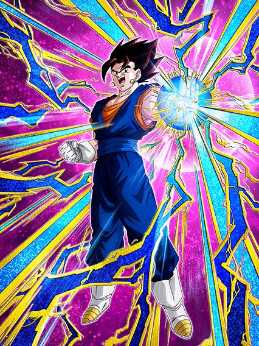
Um personagem desvia-ou-morre que precisa estar no slot 1.. o que poderia dar errado?
Esse cara tem 150% de ATK e DEF a mais e 70% de chance de desvio estando no slot 1, o que é forte, mas ainda sim, se ele levar um tapa, já vai de comes e bebes
Vale mencionar que fora do slot 1 ele não tem esses buffs de ATK e DEF, então não é como se você pudesse ignorar e usar ele em outros slots, pq aí q ele vira um papel mesmo
Esse cara builda 100% de DEF fazendo 5 Super Attacks, e felizmente isso não é muito difícil já que ele já lança um adicional com 50% de chance de ser um Super naturalmente, e lança um Super adicional caso tenha um inimigo Majin Buu Saga
O mais interessante desse cara é ele ser um suporte de 30% de ATK e DEF pra Super Class, e pra cada card Majin Buu Saga no time, o suporte aumenta em 3% (ou seja, num time completo ele dá 51% de suporte)
Ficou meio óbvio que esse Vegetto era pra ter o papel de suporte no time, já que ele faz isso bem, mas aí te obrigam a usar ele no slot 1 💀
EZA do Gohan Adolescente INT
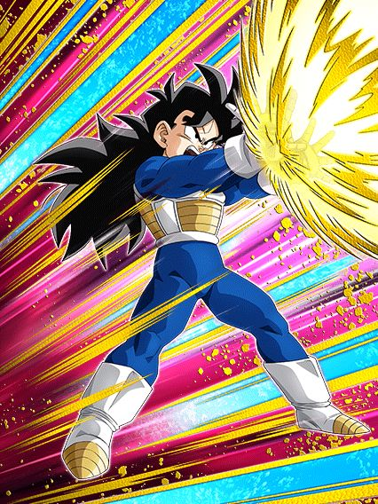
Acho que o Dokkan tem algum vício em fazer Gohans F2Ps de World Tournaments serem úteis.
Esse Gohan tem um suporte quase idêntico ao do Vegetto AGL acima, sendo a única diferença é que os 30% de ATK e DEF são pra Androids/Cell Saga, e os 3% a mais são por Super Class no time
Em geral esse cara até consegue ter uma defesa decente, e tem potencial decente pra Super Battle Roads, já que ele sela o Super Attack do oponente caso tenham mais de 2 inimigos, e caso tenham menos de 2, tem 58% de chance de crítico
O mais legal dele é ele ter defesa ativa caso tenha outro Bond of Master and Disciple no turno, que é bem fácil, então na maioria das vezes vai estar ativa
Além disso, o Super Attack dele dá 50% de ATK e DEF por 6 turnos, nada mal ein
EZA da Chichi PHY
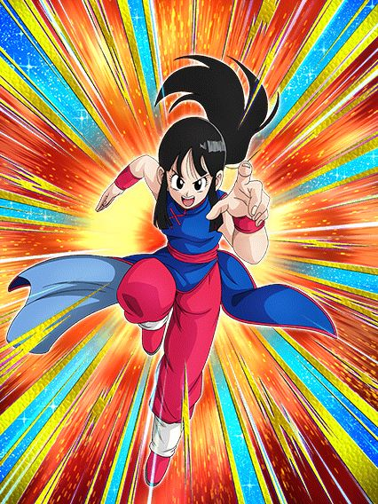
Ela tem 2 ataques básicos adicionais.
A Chichi é um card confuso pq ela faz muitas coisas diferentes
Pra começar, ela tem 30% de chance de desvio que só aumenta pra 70% caso estiver com menos de 49% de HP.. ok né
Ela tem 50% de chance de lançar um Super Attack adicional e fica super efetiva caso tenha um aliado ou inimigo com o nome "Goku", que é decente até né
Então ela simplesmente lança 2 ataques básicos adicionais que não tem chance de virarem Supers nem nada, é só isso
E ela lança um Super Attack adicional toda vez que ataca 5 vezes na luta.. uhhhhh..
Ela faz coisas demais e em nada ela acaba sendo boa, se o desvio dela não tivesse uma condição de HP ela seria usável
Mas nesse estado q tá agora? Difícil.
Dokkan Awakenings da Caulifla INT e Kale TEQ
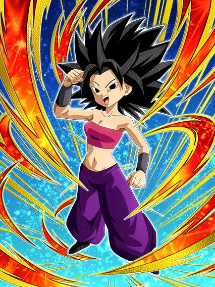 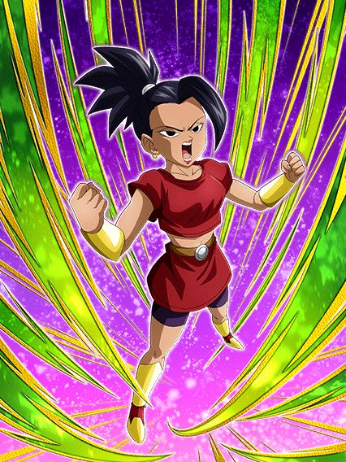 "Mãe, a gente pode ter uma Kale STR e uma Caulifla TEQ?"
"Ora filho, mas não temos isso em casa já?"
A Kale STR e Caulifla TEQ em casa:
Essas duas não ironicamente são uma cópia mais fraca das versões de summon delas, o que é interessante, já que elas não são tão ruins não
A Caulifla INT lança um Super adicional garantido e tem 70% de chance de desvio caso tenha uma Kale no turno (e infelizmente é esse o limite do desvio), e até tem o stack de ATK e DEF no Super Attack igualzinho a versão de summon
Ela builda 60% de ATK e DEF com 3 desvios, e ganha 6% de chance de crítico por Universe 6 no time, bem decente
Lógico, ela é um card desvia-ou-morre, mas ainda sim, se ela desviar, é útil
A Kale TEQ já é um pouco mais fraca, já q ela tem um kit similar a Caulifla no quesito stack e etc, mas ela tem 70% de chance de ter defesa ativa
É.. pelo menos a Caulifla talvez aguente 1 ataque básico e desvie do resto, mas se a defesa ativa da Kale não ativar, é game over meu caro
Certamente não é o pior WT de todos, mas eles realmente tem q parar de colocar isso em aniversários
É só dar as 50 ds de outro jeito ou sei lá..
Você chegou ao fim dessa página!
Bom.. por enquanto né, a celebração tá acontecendo agora e tals..
Obrigado por ler tudo, e fica a vontade pra ver outras
")